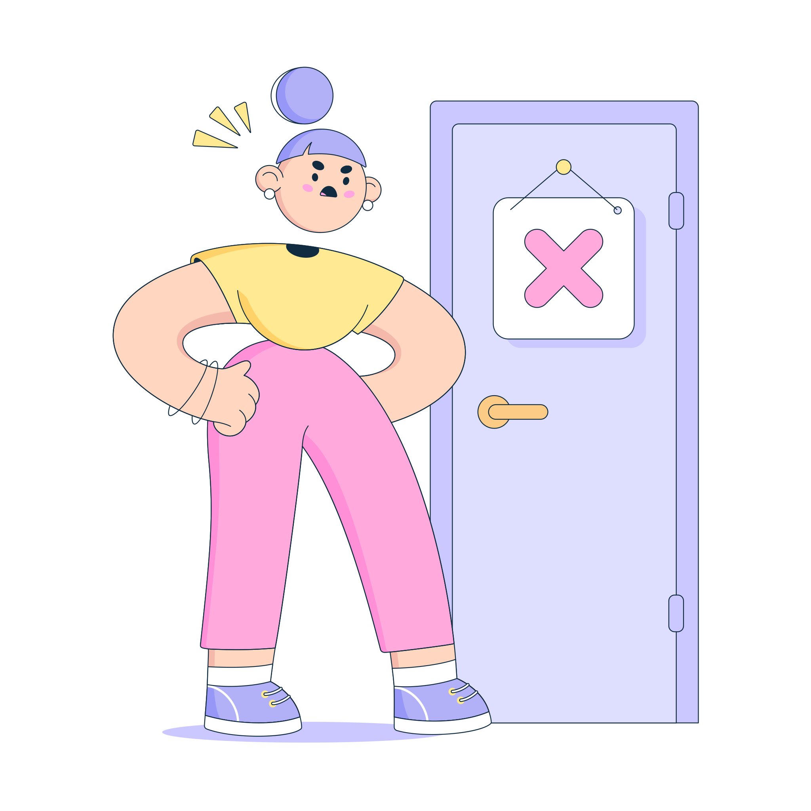

Juego de memorama
Intentos: {{intentos}}/{{MAXIMOS_INTENTOS}} Aciertos: {{aciertos}}
En particular, el hardware juega un papel muy importante en la implementación y funcionamiento de cualquier negocio electrónico.
Es importante considerar las necesidades específicas del negocio.
¿Qué tipo de hardware se necesita para que el negocio funcione correctamente?
¿Cuántos servidores se necesitan? ¿Qué tipo de almacenamiento se requiere?
Los negocios electrónicos a menudo crecen rápidamente, y es necesario asegurarse de que la infraestructura tecnológica pueda crecer al mismo ritmo.
Esto significa que es importante elegir hardware que sea escalable, lo que significa que se pueda agregar más capacidad en el futuro sin necesidad de cambiar todo el hardware existente.
La redundancia se refiere a tener sistemas de respaldo en caso de que falle el hardware principal. Si el hardware falla y no hay respaldo, el negocio puede perder datos importantes o incluso detenerse por completo. Por lo tanto, es importante considerar la redundancia y tener un plan de contingencia en caso de fallas de hardware.
Los negocios electrónicos manejan datos confidenciales de los clientes y otros datos importantes. Es vital asegurarse de que el hardware esté protegido contra intrusiones y ataques cibernéticos, para mantener seguros estos datos.

Intentos: {{intentos}}/{{MAXIMOS_INTENTOS}} Aciertos: {{aciertos}}